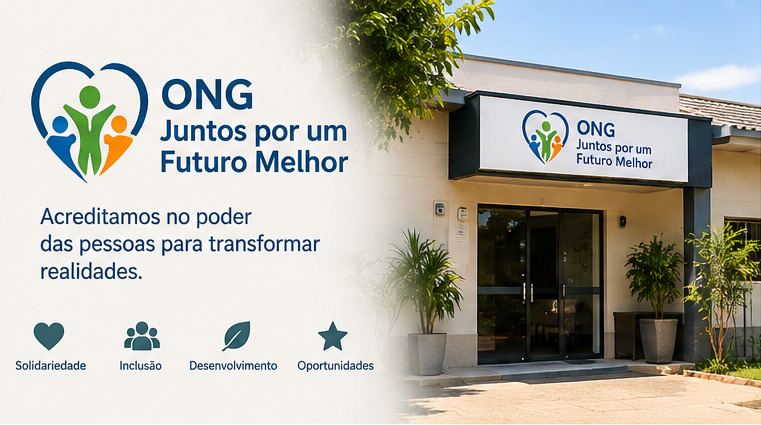
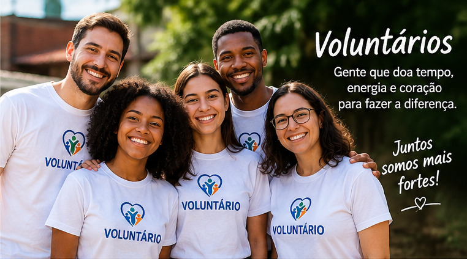

Missão
Promover ações sociais que contribuam para uma sociedade mais justa, inclusiva e solidária.
O Projeto Esperança trabalha para transformar vidas através da educação, solidariedade, voluntariado e desenvolvimento social.

Somos uma organização dedicada a criar oportunidades e melhorar a qualidade de vida das comunidades.
Promover ações sociais que contribuam para uma sociedade mais justa, inclusiva e solidária.
Construir um futuro onde todas as pessoas tenham acesso a oportunidades e possam desenvolver seu potencial.
Solidariedade, respeito, transparência, responsabilidade social e colaboração.

O Projeto Esperança nasceu com o objetivo de reunir pessoas dispostas a ajudar comunidades que precisam de novas oportunidades.
Ao longo dos anos, nossos voluntários participaram de projetos de educação, alimentação, capacitação profissional e desenvolvimento social.
Hoje continuamos trabalhando para ampliar nosso impacto e alcançar cada vez mais pessoas.
A transparência é um dos nossos principais valores.
Rua da Esperança, 100
São Paulo - SP
(11) 99999-9999
contato@projetoesperanca.org